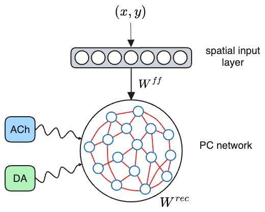

Neuromodulated online cognitive maps for reinforcement learning
K. Danieli1, M.E.Lepperød2, M.Fyhn1,2
1Department of Biosciences, University of Oslo 2Simula Research Laboratory
Architecture: Place Cell Neural Network
The model is structured is two component: a spatial layer, whose purpose is to receives a 2D position and casts it to an higher dimensional space (here by means of Gaussian place fields), and a network of un-tuned neurons, which receives the activation from the earlier layer. During
training, through competitive dynamics and homeostatic mechanisms, the un-tuned neurons progressively form spatial fields over the input representation, becoming place cells (and hence the name PCNN. Plasticity is supported by cholinergic (ACh)
and dopaminergic (DA) stimulation, which work as finite synaptic resources.

Formation of a cognitive map
An agent, endowed with the PCNN model, roaming in a 2D environment, with a random trajectory. As it goes, it builds a spatial representation by tuning cells to its current position. These place cells (PCs) form a network (graph)
with connections defined through K-Neareast Neighbor (within a certain radius). The formation of new cells is modulated by the level of acetilcholine (ACh). When the agent passes near a rewarded
area, it receives a spike of dopamine (DA), which modulates the spatial remapping of nearby place cells towards its current position.
Exploitation of the cognitive map
Once the agent has formed a spatial representation, it can use it to navigate towards a target location. The algorithm implemented here is based on matching the population vector (i.e. representation) corresponding to the current location with the one of the target, and
chosing a direction accordingly.